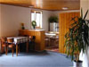

|
|
 |
Szukasz noclegu w Wysokich Tatrach Słowackich?
Na stronach o zakwaterowaniu nie znalazłaś/eś
wszystkich potrzebnych Ci informacji?
Napisz:
informacje@tatry.info
|
Mieszkanie w Villi Łomniczce - Tatrzańska Łomnica
Samodzielne mieszkanie w centrum Tatrzańskiej Łomnicy dla 4-7 osób
Prywatna łazienka, WC, kuchnia. |
|  |
Pensjonat Jezercak - Stara Leśna
Niska cena, wysoki komfort, 2 apartamenty i dwa pokoje, łącznie możemy gościć 16 osób. |

Strona zaakceptowana i skatalogowana w

|
|